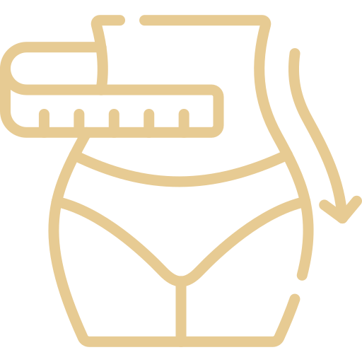

I miei servizi
Nutrizione sportiva
Nutrizione e IBS
Nutrizione clinica
Dieta in presenza di
allergie e/o intolleranze
Diete
vegetariane e vegane
Nutrizione in gravidanza
Rieducazione alimentare

Gestione del peso
Contattami
Hai domande o vuoi prenotare una consulenza? Scrivimi!